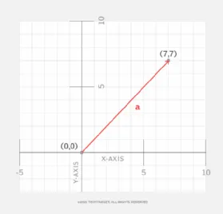

Unit 1
Motion and Force
Movimiento y fuerza
Lesson 1.1
Motion in One and Two Dimensions
Movimiento en una y dos dimensiones
frame of reference
marco de referencia

a system for specifying the precise location of objects in space and time
un sistema para especificar la ubicación precisa de objetos en el espacio y el tiempo
displacement
desplazamiento
a change in position in a frame of reference
un cambio de posición en un marco de referencia
vector
vector
physical quantity with size and direction
Cantidad física con tamaño y dirección
scalar
escalar
physical quantity with ONLY size and NO direction
cantidad física con SOLO tamaño y NO dirección
Lesson 1.2
Force, Mass, and Acceleration
Fuerza, Masa y Aceleración
force
fuerza
an action exerted on an object that may change the object's state of rest or motion; force has magnitude and direction
una acción ejercida sobre un objeto que puede cambiar el estado de reposo o movimiento del objeto; La fuerza tiene magnitud y dirección.
newton
newton
\[\begin{aligned} N & = 1 \; kg \cdot m/s^2 \\ \end{aligned} \]A force of 1 N will increase the speed of a 1 kg object by 1 m/s for every second that it is applied.
Una fuerza de 1 N aumentará la rapidez de un objeto de 1 kg en 1 m/s por cada segundo que se aplique.
A jogger runs for 30 minutes and they travel a distance of 6 miles. What was the jogger's speed?
$$ speed = distance / time$$
$$ speed = 6 miles / time$$
$$ speed = 6 miles / .5 hrs$$
$$ speed = 6 miles / .5 hrs = 12 m/hr$$
A mass of 10 kilograms is accelerated by 3 meter/second/second. What force was required to produce this.
$$ F = ma$$
$$ a = 3 m/s^2 $$
$$ m = 10 kg $$
$$ F = (10kg) \cdot (3 m/s^2)$$
$$ F = 30 kg \cdot m/s^2 = 30 N$$
forces can:
accelerate an object from rest into motion
cause a moving object to speed up, slow down, or change its direction.
familiar forces:
- gravity
- air resistance
- friction
friction
fricción
a force that opposes motion between two surfaces that are in contact
Fuerza que se opone al movimiento entre dos superficies que están en contacto.
Lesson 1.3
Engineering
Content
More content

There are two kinds of forces:
keywordrest
keywordrest